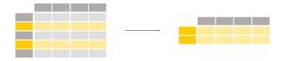

In [1]: import pandas as pd
- Titanic data
This tutorial uses the Titanic data set, stored as CSV. The data consists of the following data columns:
PassengerId: Id of every passenger.
Survived: Indication whether passenger survived.
0for yes and1for no.Pclass: One out of the 3 ticket classes: Class
1, Class2and Class3.Name: Name of passenger.
Sex: Gender of passenger.
Age: Age of passenger in years.
SibSp: Number of siblings or spouses aboard.
Parch: Number of parents or children aboard.
Ticket: Ticket number of passenger.
Fare: Indicating the fare.
Cabin: Cabin number of passenger.
Embarked: Port of embarkation.
In [2]: titanic = pd.read_csv("data/titanic.csv") In [3]: titanic.head() Out[3]: PassengerId Survived Pclass ... Fare Cabin Embarked 0 1 0 3 ... 7.2500 NaN S 1 2 1 1 ... 71.2833 C85 C 2 3 1 3 ... 7.9250 NaN S 3 4 1 1 ... 53.1000 C123 S 4 5 0 3 ... 8.0500 NaN S [5 rows x 12 columns]
How do I select a subset of a DataFrame?#
How do I select specific columns from a DataFrame?#

I’m interested in the age of the Titanic passengers.
In [4]: ages = titanic["Age"] In [5]: ages.head() Out[5]: 0 22.0 1 38.0 2 26.0 3 35.0 4 35.0 Name: Age, dtype: float64
To select a single column, use square brackets
[]with the column name of the column of interest.
Each column in a DataFrame is a Series. As a single column is
selected, the returned object is a pandas Series. We can verify this
by checking the type of the output:
In [6]: type(titanic["Age"])
Out[6]: pandas.core.series.Series
And have a look at the shape of the output:
In [7]: titanic["Age"].shape
Out[7]: (891,)
DataFrame.shape is an attribute (remember tutorial on reading and writing, do not use parentheses for attributes) of a
pandas Series and DataFrame containing the number of rows and
columns: (nrows, ncolumns). A pandas Series is 1-dimensional and only
the number of rows is returned.
I’m interested in the age and sex of the Titanic passengers.
In [8]: age_sex = titanic[["Age", "Sex"]] In [9]: age_sex.head() Out[9]: Age Sex 0 22.0 male 1 38.0 female 2 26.0 female 3 35.0 female 4 35.0 male
To select multiple columns, use a list of column names within the selection brackets
[].
Note
The inner square brackets define a
Python list with column names, whereas
the outer brackets are used to select the data from a pandas
DataFrame as seen in the previous example.
The returned data type is a pandas DataFrame:
In [10]: type(titanic[["Age", "Sex"]])
Out[10]: pandas.core.frame.DataFrame
In [11]: titanic[["Age", "Sex"]].shape
Out[11]: (891, 2)
The selection returned a DataFrame with 891 rows and 2 columns. Remember, a
DataFrame is 2-dimensional with both a row and column dimension.
For basic information on indexing, see the user guide section on indexing and selecting data.
How do I filter specific rows from a DataFrame?#

I’m interested in the passengers older than 35 years.
In [12]: above_35 = titanic[titanic["Age"] > 35] In [13]: above_35.head() Out[13]: PassengerId Survived Pclass ... Fare Cabin Embarked 1 2 1 1 ... 71.2833 C85 C 6 7 0 1 ... 51.8625 E46 S 11 12 1 1 ... 26.5500 C103 S 13 14 0 3 ... 31.2750 NaN S 15 16 1 2 ... 16.0000 NaN S [5 rows x 12 columns]
To select rows based on a conditional expression, use a condition inside the selection brackets
[].
The condition inside the selection
brackets titanic["Age"] > 35 checks for which rows the Age
column has a value larger than 35:
In [14]: titanic["Age"] > 35
Out[14]:
0 False
1 True
2 False
3 False
4 False
...
886 False
887 False
888 False
889 False
890 False
Name: Age, Length: 891, dtype: bool
The output of the conditional expression (>, but also ==,
!=, <, <=,… would work) is actually a pandas Series of
boolean values (either True or False) with the same number of
rows as the original DataFrame. Such a Series of boolean values
can be used to filter the DataFrame by putting it in between the
selection brackets []. Only rows for which the value is True
will be selected.
We know from before that the original Titanic DataFrame consists of
891 rows. Let’s have a look at the number of rows which satisfy the
condition by checking the shape attribute of the resulting
DataFrame above_35:
In [15]: above_35.shape
Out[15]: (217, 12)
I’m interested in the Titanic passengers from cabin class 2 and 3.
In [16]: class_23 = titanic[titanic["Pclass"].isin([2, 3])] In [17]: class_23.head() Out[17]: PassengerId Survived Pclass ... Fare Cabin Embarked 0 1 0 3 ... 7.2500 NaN S 2 3 1 3 ... 7.9250 NaN S 4 5 0 3 ... 8.0500 NaN S 5 6 0 3 ... 8.4583 NaN Q 7 8 0 3 ... 21.0750 NaN S [5 rows x 12 columns]
Similar to the conditional expression, the
isin()conditional function returns aTruefor each row the values are in the provided list. To filter the rows based on such a function, use the conditional function inside the selection brackets[]. In this case, the condition inside the selection bracketstitanic["Pclass"].isin([2, 3])checks for which rows thePclasscolumn is either 2 or 3.
The above is equivalent to filtering by rows for which the class is
either 2 or 3 and combining the two statements with an | (or)
operator:
In [18]: class_23 = titanic[(titanic["Pclass"] == 2) | (titanic["Pclass"] == 3)]
In [19]: class_23.head()
Out[19]:
PassengerId Survived Pclass ... Fare Cabin Embarked
0 1 0 3 ... 7.2500 NaN S
2 3 1 3 ... 7.9250 NaN S
4 5 0 3 ... 8.0500 NaN S
5 6 0 3 ... 8.4583 NaN Q
7 8 0 3 ... 21.0750 NaN S
[5 rows x 12 columns]
Note
When combining multiple conditional statements, each condition
must be surrounded by parentheses (). Moreover, you can not use
or/and but need to use the or operator | and the and
operator &.
See the dedicated section in the user guide about boolean indexing or about the isin function.
I want to work with passenger data for which the age is known.
In [20]: age_no_na = titanic[titanic["Age"].notna()] In [21]: age_no_na.head() Out[21]: PassengerId Survived Pclass ... Fare Cabin Embarked 0 1 0 3 ... 7.2500 NaN S 1 2 1 1 ... 71.2833 C85 C 2 3 1 3 ... 7.9250 NaN S 3 4 1 1 ... 53.1000 C123 S 4 5 0 3 ... 8.0500 NaN S [5 rows x 12 columns]
The
notna()conditional function returns aTruefor each row the values are not aNullvalue. As such, this can be combined with the selection brackets[]to filter the data table.
You might wonder what actually changed, as the first 5 lines are still the same values. One way to verify is to check if the shape has changed:
In [22]: age_no_na.shape
Out[22]: (714, 12)
For more dedicated functions on missing values, see the user guide section about handling missing data.
How do I select specific rows and columns from a DataFrame?#

I’m interested in the names of the passengers older than 35 years.
In [23]: adult_names = titanic.loc[titanic["Age"] > 35, "Name"] In [24]: adult_names.head() Out[24]: 1 Cumings, Mrs. John Bradley (Florence Briggs Th... 6 McCarthy, Mr. Timothy J 11 Bonnell, Miss. Elizabeth 13 Andersson, Mr. Anders Johan 15 Hewlett, Mrs. (Mary D Kingcome) Name: Name, dtype: object
In this case, a subset of both rows and columns is made in one go and just using selection brackets
[]is not sufficient anymore. Theloc/ilocoperators are required in front of the selection brackets[]. When usingloc/iloc, the part before the comma is the rows you want, and the part after the comma is the columns you want to select.
When using the column names, row labels or a condition expression, use
the loc operator in front of the selection brackets []. For both
the part before and after the comma, you can use a single label, a list
of labels, a slice of labels, a conditional expression or a colon. Using
a colon specifies you want to select all rows or columns.
I’m interested in rows 10 till 25 and columns 3 to 5.
In [25]: titanic.iloc[9:25, 2:5] Out[25]: Pclass Name Sex 9 2 Nasser, Mrs. Nicholas (Adele Achem) female 10 3 Sandstrom, Miss. Marguerite Rut female 11 1 Bonnell, Miss. Elizabeth female 12 3 Saundercock, Mr. William Henry male 13 3 Andersson, Mr. Anders Johan male .. ... ... ... 20 2 Fynney, Mr. Joseph J male 21 2 Beesley, Mr. Lawrence male 22 3 McGowan, Miss. Anna "Annie" female 23 1 Sloper, Mr. William Thompson male 24 3 Palsson, Miss. Torborg Danira female [16 rows x 3 columns]
Again, a subset of both rows and columns is made in one go and just using selection brackets
[]is not sufficient anymore. When specifically interested in certain rows and/or columns based on their position in the table, use theilocoperator in front of the selection brackets[].
When selecting specific rows and/or columns with loc or iloc,
new values can be assigned to the selected data. For example, to assign
the name anonymous to the first 3 elements of the fourth column:
In [26]: titanic.iloc[0:3, 3] = "anonymous"
In [27]: titanic.head()
Out[27]:
PassengerId Survived Pclass ... Fare Cabin Embarked
0 1 0 3 ... 7.2500 NaN S
1 2 1 1 ... 71.2833 C85 C
2 3 1 3 ... 7.9250 NaN S
3 4 1 1 ... 53.1000 C123 S
4 5 0 3 ... 8.0500 NaN S
[5 rows x 12 columns]
See the user guide section on different choices for indexing to get more insight in the usage of loc and iloc.
REMEMBER
When selecting subsets of data, square brackets
[]are used.Inside these brackets, you can use a single column/row label, a list of column/row labels, a slice of labels, a conditional expression or a colon.
Select specific rows and/or columns using
locwhen using the row and column names.Select specific rows and/or columns using
ilocwhen using the positions in the table.You can assign new values to a selection based on
loc/iloc.
A full overview of indexing is provided in the user guide pages on indexing and selecting data.